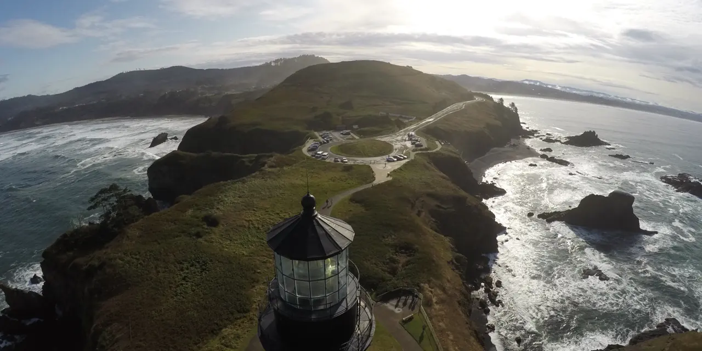

제나테크를 볼 때 가장 먼저 조심해야 할 부분은 “드론”이라는 단어가 주가를 빠르게 움직일 수 있다는 점입니다. 드론, 인공지능, 국방, 서비스형 매출이 한 문장 안에 같이 들어가면 이야기는 매력적으로 들립니다. 하지만 작은 회사의 주주는 이야기보다 더 차가운 질문을 먼저 던져야 합니다. 이 회사가 발표한 매출 성장률이 실제 반복 계약으로 남을 수 있는지, 그리고 그 과정에서 현금 소진과 주주 희석을 얼마나 줄일 수 있는지가 핵심입니다.
제나테크는 스스로를 인공지능 드론, 서비스형 드론, 기업용 소프트웨어, 양자컴퓨팅 솔루션을 다루는 회사라고 설명합니다. 표현은 넓지만 지금 투자자가 확인해야 할 중심축은 드론 서비스입니다. 특히 토지 측량, 시설 점검, 농업, 에너지, 정부·방산 고객처럼 사람이 반복적으로 현장에 나가야 했던 업무를 드론 데이터 수집과 소프트웨어 분석으로 바꾸겠다는 구상입니다.
그래서 이 글은 제나테크가 좋은 회사인지 아닌지를 단정하려는 글이 아닙니다. 주주가 지금 가장 궁금해할 질문, 즉 “640% 매출 증가는 정말 사업 체질이 바뀐 신호인가”에 답하기 위한 확인 순서를 정리한 글입니다. 제나테크는 성장 가능성이 있는 동시에 검증해야 할 숫자가 많은 종목입니다. 기대가 큰 만큼 확인도 더 촘촘해야 합니다.
640% 성장률은 어디서 나왔나

제나테크의 2026년 1분기 발표에서 눈에 띄는 숫자는 매출 840만 달러와 전년 동기 대비 640% 증가입니다. 여기서 중요한 점은 이 금액이 미국달러가 아니라 회사가 밝힌 캐나다달러 기준이라는 점입니다. 같은 발표에서 전년 동기 매출은 113만 달러였고, 회사는 드론 서비스 포트폴리오와 측량·기존 서비스 기업 인수 효과가 성장에 기여했다고 설명했습니다.
이 숫자는 분명히 강합니다. 다만 투자자가 바로 “고성장 드론 기업”이라고 결론 내리기에는 이릅니다. 성장률이 높은 이유가 기존 고객의 반복 사용 증가인지, 인수한 회사의 매출이 한꺼번에 연결된 효과인지, 일회성 프로젝트가 섞인 것인지가 아직 더 중요합니다. 작은 회사에서는 분모가 작으면 성장률이 크게 보일 수 있고, 인수로 연결 매출이 늘면 사업의 질이 좋아진 것처럼 보일 수도 있습니다.
따라서 제나테크의 첫 번째 점검 포인트는 매출의 출처입니다. 드론을 띄우는 기술이 좋은지보다 어떤 고객이 돈을 냈고, 그 고객이 다음 분기에도 다시 돈을 낼 가능성이 높은지를 봐야 합니다. 특히 측량과 시설 점검 서비스는 반복 수요가 생길 수 있지만, 계약 단위가 프로젝트성인지 구독형인지에 따라 가치가 크게 달라집니다.
DaaS는 매출보다 통합 난도가 먼저 보입니다
관련 영상
제나테크 ZENA 향후 주가와 사업 전망을 설명하는 한국어 롱폼 영상
서비스형 드론 모델은 단순 장비 판매보다 더 좋은 사업이 될 수 있습니다. 고객이 드론을 직접 사고 조종사를 고용하고 데이터를 처리하는 대신, 제나테크가 장비 운용과 데이터 수집, 분석 소프트웨어까지 묶어서 제공하면 반복 매출 구조를 만들 수 있기 때문입니다. 고객 입장에서는 초기 투자 부담이 줄고, 회사 입장에서는 고객 관계가 길어질 수 있습니다.
문제는 DaaS가 말처럼 자동으로 고마진 사업이 되지 않는다는 점입니다. 현장 인력, 배터리와 장비 유지보수, 보험, 규제 대응, 데이터 처리 인프라, 인수 기업 통합 비용이 같이 따라옵니다. 특히 인수를 통해 빠르게 매출을 키운 회사는 각 지역의 고객, 가격표, 작업 방식, 회계 시스템을 하나로 묶는 시간이 필요합니다. 이 통합이 늦어지면 매출은 늘어도 영업현금흐름은 따라오지 않을 수 있습니다.
제나테크가 주주에게 증명해야 할 것은 “드론을 많이 띄운다”가 아닙니다. 같은 고객에게 반복적으로 일을 받고, 서비스 단가를 방어하며, 인수한 회사의 비용 구조를 낮출 수 있는지입니다. 이 세 가지가 확인되면 DaaS는 매력적인 반복 매출 모델이 될 수 있습니다. 반대로 이 세 가지가 확인되지 않으면 매출 성장률은 높은데 계속 자금 조달이 필요한 구조로 남을 수 있습니다.
주주가 확인할 숫자는 무엇인가
첫 번째 숫자는 드론 서비스 매출의 반복성입니다. 회사가 분기마다 DaaS 매출, 신규 고객, 기존 고객 재계약, 평균 계약 기간을 더 자세히 공개한다면 투자자는 성장의 질을 판단할 수 있습니다. 지금처럼 큰 성장률이 나온 뒤에는 다음 분기와 그다음 분기에도 같은 방향이 이어지는지가 중요합니다. 한 번의 연결 매출보다 반복 매출의 비중이 더 큰 의미를 갖습니다.
두 번째 숫자는 매출총이익률입니다. 드론 서비스가 소프트웨어처럼 보이더라도 실제 현장 작업이 많으면 원가가 높아질 수 있습니다. 장비 감가상각, 현장 인력, 보험, 이동 비용, 데이터 처리 비용을 뺀 뒤에도 마진이 남는지 봐야 합니다. 매출총이익률이 개선되지 않으면 회사가 커질수록 손실도 같이 커질 수 있습니다.
세 번째 숫자는 현금 보유와 영업현금흐름입니다. 소형 성장주는 좋은 발표가 나온 뒤에도 추가 자금 조달이 필요할 수 있습니다. 특히 인수 전략을 쓰는 회사는 현금이 빨리 줄어들 가능성이 있습니다. 제나테크 주주는 매출 성장보다 현금 소진 속도, 주식 발행 가능성, 인수 대금 지급 방식, 워런트나 전환증권 구조를 함께 봐야 합니다.
네 번째 숫자는 고객군의 질입니다. 정부·방산, 에너지, 농업, 시설 관리 고객은 장기 수요가 생길 수 있는 분야입니다. 그러나 각 고객군은 영업 주기가 다릅니다. 정부 계약은 신뢰도를 높일 수 있지만 절차가 길고, 상업 고객은 빠르게 늘 수 있지만 가격 경쟁이 심할 수 있습니다. 고객군별 매출 비중이 공개될수록 주주는 성장의 안정성을 더 정확히 볼 수 있습니다.
상승 시나리오와 경계선은 어디인가
제나테크의 긍정적 시나리오는 분명합니다. 드론 서비스가 측량과 시설 점검에서 반복 계약으로 자리 잡고, 인수한 서비스 회사들이 같은 기술 플랫폼 아래에서 비용을 줄이며, 정부·방산 분야에서 신뢰도 높은 계약이 붙는 그림입니다. 이 경우 회사는 단순 드론 제조사가 아니라 데이터 수집과 분석을 제공하는 현장 자동화 플랫폼으로 평가받을 수 있습니다.
하지만 경계선도 분명합니다. 성장률이 인수 효과에 크게 기대고 있다면 다음에는 더 많은 인수나 더 큰 계약이 필요합니다. 고객이 프로젝트 단위로만 주문한다면 매출 변동성이 커질 수 있습니다. 드론 운용 원가가 높아 매출총이익률이 낮게 머물면 “서비스형”이라는 이름이 붙어도 주가가 높은 배수를 받기 어렵습니다.
가장 위험한 구간은 좋은 발표와 자금 조달이 동시에 반복되는 때입니다. 회사가 성장하고 있는데 현금이 계속 부족하면 주주는 매출 증가와 희석 사이에서 균형을 봐야 합니다. 주가가 낮은 상태에서 주식 발행이 반복되면 사업이 커져도 기존 주주의 몫은 줄어들 수 있습니다. 그래서 제나테크는 매출 성장과 함께 주당 가치가 같이 커지는지를 확인해야 하는 종목입니다.
관련종목과 비교할 때의 순서
제나테크를 혼자 보면 성장률만 크게 보일 수 있습니다. 비교 대상을 같이 보면 더 냉정해집니다. 에어로바이런먼트는 무인 시스템 분야에서 더 오래 검증된 방산·상업 드론 기업이고, 크라토스 디펜스 & 시큐리티 솔은 무인 항공 시스템과 방산 전자 분야에서 정부 수요와 연결됩니다. 레드 캣 홀딩스는 소형 드론과 국방 수요 기대가 주가에 반영되는 방식이 제나테크와 일부 겹칩니다.
이 네 종목을 비교할 때는 기술 이름보다 계약의 성격을 먼저 보셔야 합니다. 제나테크는 빠른 성장률과 DaaS 전환 가능성이 강점입니다. 에어로바이런먼트와 크라토스는 상대적으로 검증된 정부·방산 고객과 수주 구조를 확인할 수 있다는 장점이 있습니다. 레드 캣은 소형 드론 수요가 실제 대량 납품으로 이어지는지가 핵심입니다.
따라서 제나테크 주주가 다음에 확인할 순서는 간단합니다. 첫째, 다음 분기 DaaS 매출이 유지되는지 봅니다. 둘째, 매출총이익률과 현금흐름이 성장률을 따라오는지 봅니다. 셋째, 인수한 회사들이 하나의 플랫폼으로 묶이고 있는지 봅니다. 넷째, 정부·방산 또는 대형 상업 고객이 반복 계약으로 남는지 봅니다.
결론적으로 제나테크는 흥미로운 종목이지만 아직은 숫자의 질을 검증해야 하는 단계입니다. 640%라는 성장률은 관심을 받을 만한 신호입니다. 다만 그 신호가 진짜 투자 근거가 되려면 반복 계약, 마진, 현금흐름, 희석 위험이 같은 방향으로 개선돼야 합니다. 이 네 가지가 확인되기 전까지는 기대보다 검증 기준을 앞에 두는 편이 더 안전합니다.
이 글은 제나테크나 관련종목에 대한 매수·매도 추천이 아닙니다. 투자 판단 전에는 최신 공시, 회사 발표, 재무제표, 본인의 위험 감내 수준을 함께 확인해 주세요.